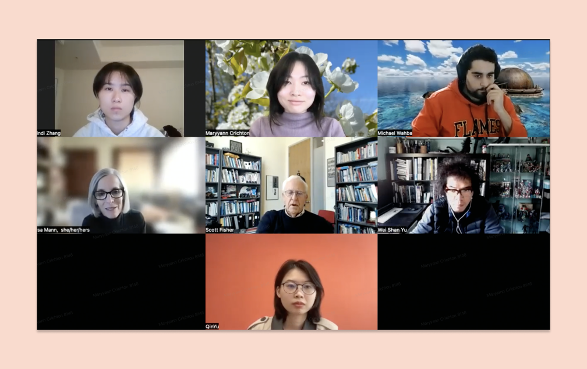
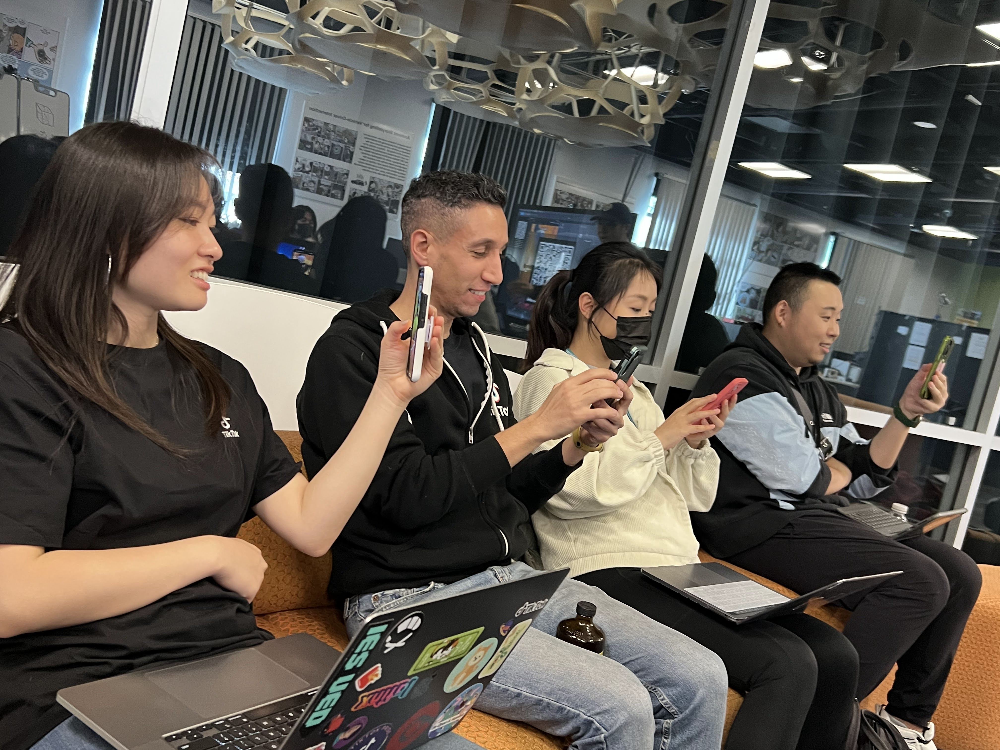
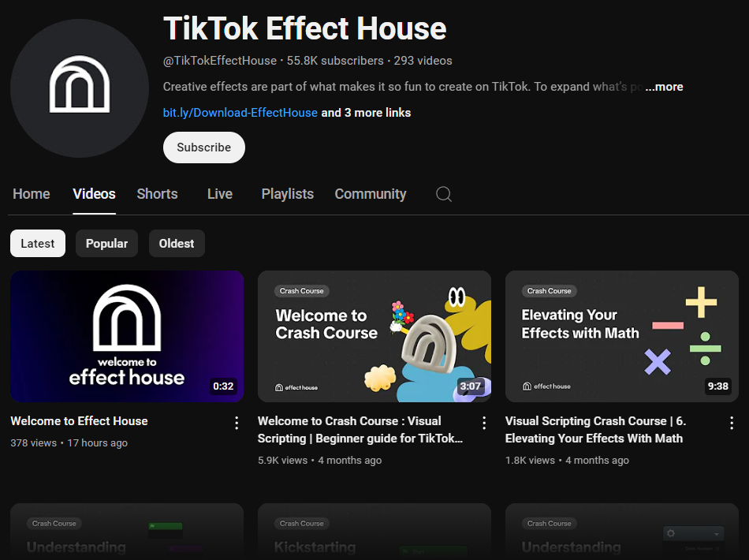

Spring Class
Upon launching the class, students were really excited to use Effect House. To inspire students in their Effect Creation journey, I invited a well-known TikTok Effect Creator Laura Goullion to give a lecture. Each student created a project for their midterm. We noticed many students used the same randomizer template and no students had published onto TikTok .
Gathering Feedback from Professors and TA
We interviewed the professors and teaching assistants to better better understand student's painpoints for using Effect House and their preference towards the single template.
Visual Scripting too difficult : Students needed help with visual scripting and struggled with complex interactions.
More templates and tutorials needed: High learning curve led to increased need for more diversified templates.
Concerns about social media : Students were uneasy about privacy when publishing on social media.

Adjustments after Feedback
Based on the interview feedback and time constraints, we shared the following resources for short term support, while planning for longer term solutions:
Effect House YouTube Tutorials: These existing tutorials taught both visual scripting and engine integration
Additional Template Resources: These templates focused on the most common requests students had for interactions.
Effect-Of-the-Week Showcase: This event showcased 3rd party effects and celebrated diversity on our app. We hoped it would create a more encouraging environment.
To connect more with students and hear their feedback, I brought 2 designers and 1 engineer to USC for the final class critique. We experienced student projects and discussed their usages and requests for Effect House.

TikTok employees attending class critique and giving feedback

Effect House Youtube tutorials focusing on visual scripting and engine features